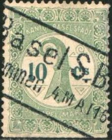
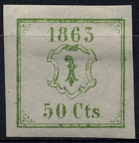
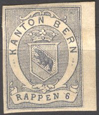
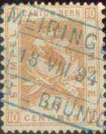
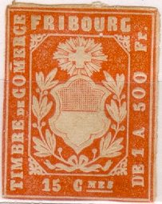
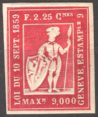
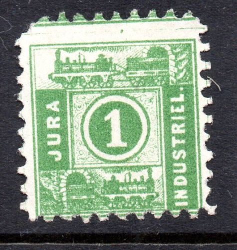
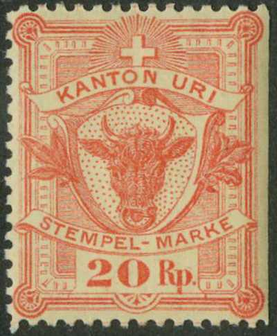
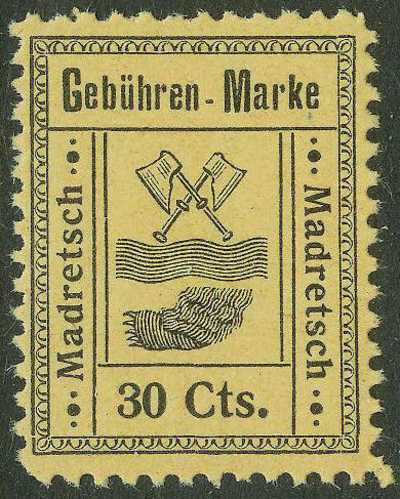

'CANTON AARGAU STEMPEL MARKE'
Return To Catalogue - Switzerland
Suisse (timbres-fiscaux) - Schweiz (Stempelmarken)
Note: on my website many of the
pictures can not be seen! They are of course present in the
catalogue;
contact me if you want to purchase the catalogue.
Many fiscal stamps have been issued in Switzerland, with inscriptions 'KANTON BERN', 'CANTON BERN', 'KANTON BASEL STADT', 'STADT ZURICH', 'GRADUIRTER STEMPEL', 'TIMBRE DE COMMERCE FRIBOURG', etc. Some examples:
'CANTON AARGAU STEMPEL MARKE'
The above desing 'CANTON AARGAU STEMPEL MARKE' was issued in 1886 in the values 10 c blue, 20 c brown, 40 c red, 1 F yellow, 2 F green, 5 F orange and 20 F violet.

'Kanton Basel Stadt Stempel Marke', 10 c green (both types)
The above design for Basel was issued in 1899,
with inscription 'STEMPEL MARKE' were issued: 10 c green (2
types, '10' different), 20 c green, 40 c green, 50 c blue, 1 F
blue, 2 F blue, 3 F blue, 4 F blue , 5 F blue, 10 F brown and
lilac, 15 F brown and lilac, 20 F brown and lilac and 30 F brown
and lilac.
with inscription 'BORDERAUX STEMPEL' exist in a similar design:
10 c, 20 c, 50 c, (all in colours lilac and black), 1 F, 2 F, 3
F, 4 F, 5 F and 10 F (all in colour lilac and red).
Dragon, inscription 'Kt BASEL STADT STEMPELMARKE'
In the above dragon design were issued (1884) the following values: 10 c, 20 c and 40 c (all in green).

(Basel 1863, 1869, 1873 and 1880)
The above fiscal stamps were used by the Police. The first one was issued in 1860 and does not have the year indicated: 50 c black. The following values exist (with year): 50 c black (1861), 50 c blue (1862), 50 c green (1863), 50 c orange (1864), 50 c brown (1865). In a slightly smaller design were issued: 50 c yellow (1866), 50 r black (1867), 50 r black on blue (1868), 50 r black (1869, see picture above), 50 r violet (1870), 50 r green (1871), 50 r blue (1872), 50 r black (1873, see picture above), 50 r violet on lilac (1874), 50 r lilac (1875), 50 r black on lilac (1876), 50 r black on green (1877), 50 r black on lilac (1878), 50 r black on yellow (1879), 50 r brown (1880), 50 r black on red (1881), 50 r red on green (1882), 50 r black on lilac (1883) and 50 r black on yellow (1884). There are several varieties of some of these stamps and the sizes of the stamps are sometimes different.
'Wechsel Stempel Marke', 20 c small size and 1 F large size
In the above 'Wechsel Stempel Marke' design were issued in 1870 the values: 7 c brown and yellow, 10 c blue and red, 20 c red and blue and 20 c red and green. In a larger design were issued: 40 c brown, 60 c blue, 80 c orange, 1 F red, 1.20 F green and brown, 2 F lilac, 3 F green, 4 F red, 5 F silver and gold, 6 F gold and brown. In 1883 the colours were changed (large sized stamps) to red in the values: 10 c, 20 c, 40 c, 60 c, 80 c, 1 F, 2 F, 3 F, 4 F, 5 F and 6 F.
('Betreibungsamt-Basel')
In the above design ('Betreibungs-amt' with dragon?) were issued from 1897 onwards the values: 80 c red, 1.50 F blue, 1.50 F green, 2.50 F blue, 2.50 F green, 3 F brown, 5 F brown and 5 F green .
('Betreibungsamt-Basel')
In this design only a 10 c red and 50 c red were issued in 1904.
('Betreibungsamt-Basel')
In this design were issued 5 c red, 20 c red, 80 c red and 3 F red (all issued in 1904).

Grenzbureau Basel (issued 1918) and Platzkommando Basel (probably
issued also around 1918)

(This stamp was issued in 1862, only in the value 10 r orange)

(This type was issued in 1874 in the value 10 r brown)

In the 1880 type above were issued ('STEMPEL TIMBRE' or 'STEMPEL MARKE'): 5 r, 10 r, 15 r, 20 r, 25 r, 30 r, 50 r, 60 r, 90 r (all in brown), 1 F, 2 F, 5 F, 10 F, 20 F, 50 F (all in green). Also were issued 5 c, 6 c, 10 c, 15 c, 20 c, 30 c, 50 c, 60 c and 90 c (all in brown).

(Type of 1903 and 1906)
The above 1903 type was issued in the values: 5 c, 10 c, 15 c, 20 c, 25 c, 30 c (all brown and black), 60 c, 90 c (all red and black), 1 F, 2 F, 5 F, 10 F, 20 F and 50 F (all lilac and black). Two types exist of these stamps; the second type was issued in 1906 with slightly different lettering. They also exist with overprint 'WECHSEL - STEMPEL'.
Yet another type exists with 'CANTON BERN' at the left and 'GEBUHRENMARKE' at the right hand side. The bear is situated in the arms of Bern with a lot of ornaments. I have seen the values 2 F red and green, 5 F green and red, 50 F lilac and red, 100 F lilac and red, 200 F lilac and red.
Again another type has 'CANTON BERN' at the left and 'GEBUHRENMARKE' at the right, but the arms have less ornaments: 10 F violet and red.
(Reduced size)
The 'GEBUHRENMARKE' design was issued in 1884 in
the values: 10 c orange, 15 c brown, 20 c blue 25 c red, 50 c
red, 80 c green, 1 F grey, 2 F brown, 5 F green, 10 F silver, 50
F violet, 100 F brown and 500 F yellow.
In 1903 a new 'Gebuhrenmarke' design was issued.
In the above design (value in ellipse) exist: 10 r orange, 20 r blue, 25 r red, 50 r red, 1 F green, 2 F brown, 5 F yellow and 10 F olive.
(This design was first issued in 1907)

In 1862 the above design was first issued 'TIMBRES DE COMERCE' left and 'FRIBOURG' on top in the values 15 c, 30 c, 50 c, 75 c, 1 F, 1.25 F, 1.50 F, 1.75 F, 2 F, 2.25 F, 2.50 F, 3 F, 3.25 F, 3.50 F and 3.75 F (all in the colour orange). These stamps have been reprinted in several colours. In 1863 two more values were issued: 15 c red (two shades) and in 1876 again more values, but with no embossing: 15 c, 30 c, 50 c, 75 c, 1 F, 1.25 F, 1.50 F, 1.75 F, 2 F, 2.25 F, 2.50 F, 2.75 F, 3 F, 3.25 F, 3.50 F and 3.75 F (all in the colour red). More values seem to have been issued in 1878.
(Timbre de Commerce Fribourg 20 c blue)
('BUREAU D'ENREGISTREMENT DONDIDIER' 1865 ,reduced size)
(Inscription 'ESTAMPILE' with arms of Geneva)
This design was issued in 1865 ('ESTAMPILE' and value on top, 'CANTON DE GENEVE' at the left), the following values exist: 5 c red, 10 c green, 15 c lilac, 20 c yellow, 25 c blue, 50 c red, 75 c brown, 1 F red, 1.50 F green, 2 F lilac, 2.50 F yellow, 3 F blue, 3.50 F red, 4 F brown, 4.50 F red and 5 F green.
(Lettre de Voiture Canton de Geneve)
In the above design only a stamp of 10 c lilac was issued in 1876, a similar stamp exists with inscription 'LOI DU 1 FEVRIER 1865' instead of 'CANTON DE GENEVE' (10 c lilac, issued in 1865).

The above stamp seems to be a reprint (2.25 F red), other reprints exist in the colours 1.75 black and 2 F violet. The normal stamps should have the colour: 5 c grey, 25 c black, 50 c black, 50 c black, 75 c black, 1 F black, 1.25 F black, 1.50 F black, 1.75 F black, 2 F black, 2.25 F black, 2.50 F black and 5 F black.
(The values 10 r green, 15 r red, 25 r blue and 50 r orange were
issued in 1878)
(1893 design 'STEMPEL-MARKE')
In 1893 the above design was issued in the
values:
Value inscription in red: 5 c green, 10 c blue,
15 c red, 20 c brown, 25 c brown, 40 c olive, 50 c orange, 60 c
black, 80 c brown
Value inscription in brown: 1 F green, 2 F blue,
3 F red, 4 F brown, 5 F lilac, 6 F brown, 7 F red, 8 F orange, 9
F violet, 10 F grey, 20 F brown.
'STADT ST.GALLEN TAXMARKE'
The above design was issued in 1895, the values 5 c, 10 c, 15 c, 20 c, 25 c, 50 c, 65 c, 80 c, 1 F, 1 1/2 F and 2 F were issued (all in green).

"JURA INDUSTRIEL.", issued in 1874.
Although these stamps are listed in the Forbin guide, it is already said there that these are actually more control stamps and not fiscals. I have now listed them under Railway Stamps.

Kanton Luzern Stempelmarke 1/8 Bogen
Tessin: 'C TICINO', 50 c brown, with and without '1931'
overprint. I've also seen the value 25 c blue (without
overprint).

Inscription 'KANTON URI STEMPEL- MARKE', with bullshead
In the above design were issued in 1895 the values: 10 r blue, 20 r red and 50 r orange and black on yellow.
('TIMBRE DE COMMERCE VAUD', 1865)
The above stamp was issued from 1865 onwards in the values: 10 c green, 15 c green, 15 c red, 25 c blue, 30 c red, 50 c blue, 50 c yellow, 1 F lilac, 1 F grey, 1.25 F yellow, 2.50 F brown and 5 F violet.

('TIMBRE CANTON DE VAUD TIMBRE, 1890 type left and 1891 type
right)
A new design was issued in 1890 with inscription 'TIMBRE' at the left and right. The values 10 c green, 20 c red, 25 c blue, 50 c orange, 1 F red and 2.50 F yellow, 5 F red, 10 F red, 15 F lilac, 20 F green, 25 F silver, 50 F bronze, 150 F gold. The values 10 c, 20 c, 25 c, 50 c, 1 F and 2.50 F were re-issued in a slightly different type in 1891 (see image above).
(Reduced size)
Taxmarke
Graduirter Stempel

Effets de Change Wechsel Gambiali; I have seen the values 5 c
grey and red, 15 c brown and red, 20 c grey and red, 20 c brown
and red, 30 c grey and red, 40 c grey and red, 50 c grey and red,
1 F violet and red, 3 F violet and red. I have also seen some
values with overprint 'Service Consulaire Immatriculation' and
some with further surcharges.
Reduced sizes; 'Jndusriefond des Stickereiverbandes': I have seen
the values 40 r, 50 r (alle in green and red) and 1 F, 2 F (all
in orange and blue)
'Obligation' 1918, in this design I have seen 2 F, 3 F, 4 F, 10 F
and 20 F all in the same colours. I have also seen the 5 F value
with additional overprint 'Service Consulaire Taxes'.
'GEBUHREN- MARKE GEMEINDE KONITZ', 50 c green, issued in 1903 for
Könitz (Canton Bern); a 1 F red also exists as well as a 50 c
blue and 1 F red in a slightly smaller size (issued 1901).
'COMMUNE DU LOCLE' (Canton Neuchatel); issued in 1892, the values
5 c black, 20 c brown, 50 c blue and 1 F red exist.

Madretsch (Canton Bern), 'Gebühren-Marke' 1903; the following
values were issued: 20 c red, 30 c black on yellow, 50 c black on
red, 75 c black on blue and 1 F black on green
'COMUNE MENDRISIO' (canton Ticino) 'TASSA COMUNALE 1 Fr', similar
stamps exist for the town of Castagnola 'DIRITTI DI CANCELLERIA':
10 c red, 25 c blue, 50 c green and 1 F violet (issued in 1905).
'RECONVILIER Timbre impot' (1904) 50 c red, bisected to serve as
a 25 c stamp.
{kind=link}
{kind=link}
{kind=link}
{kind=link}
{kind=link}